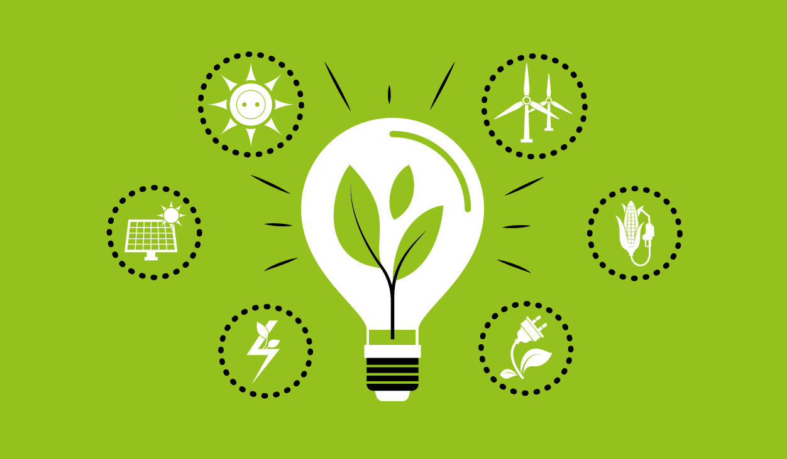
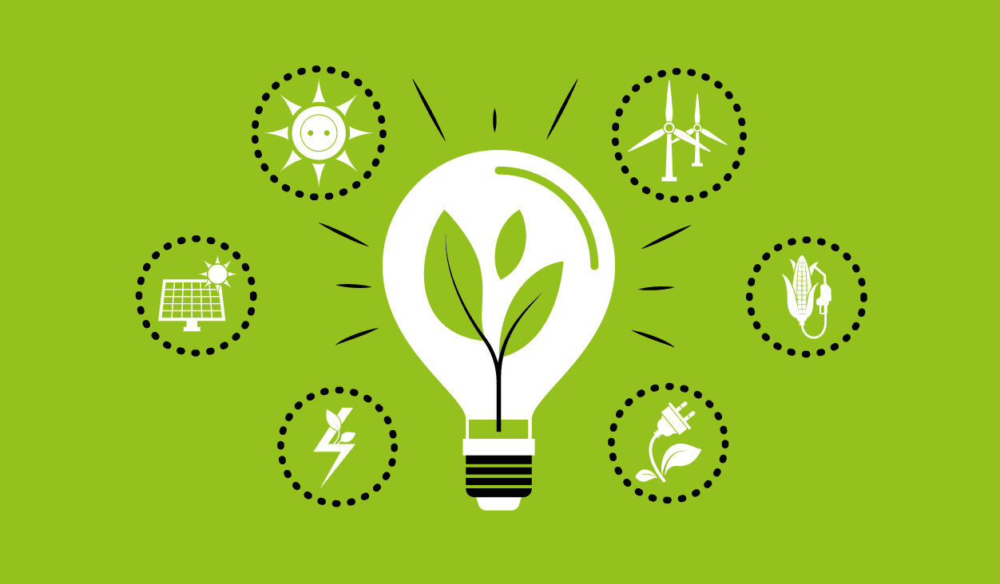
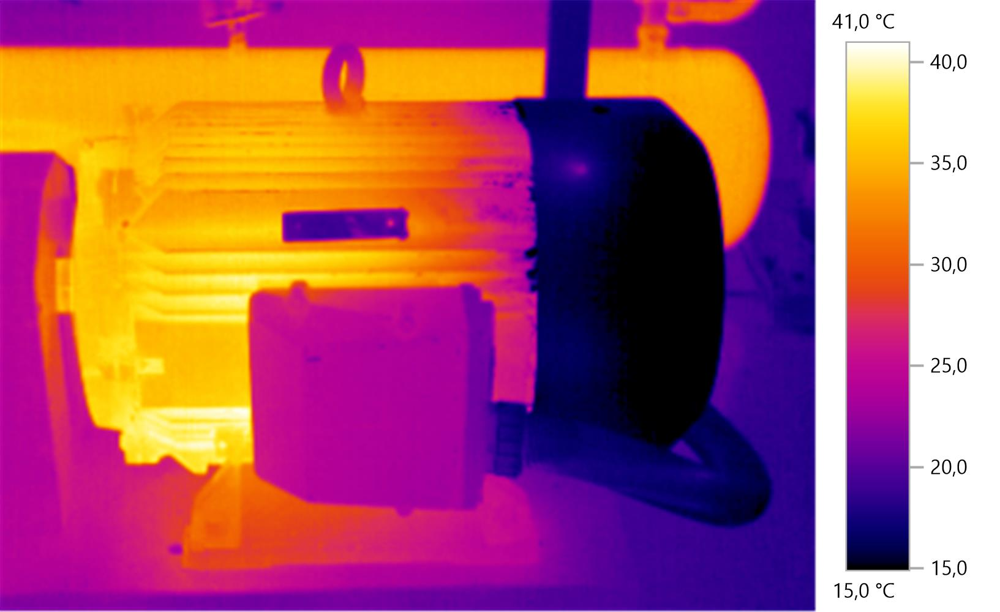
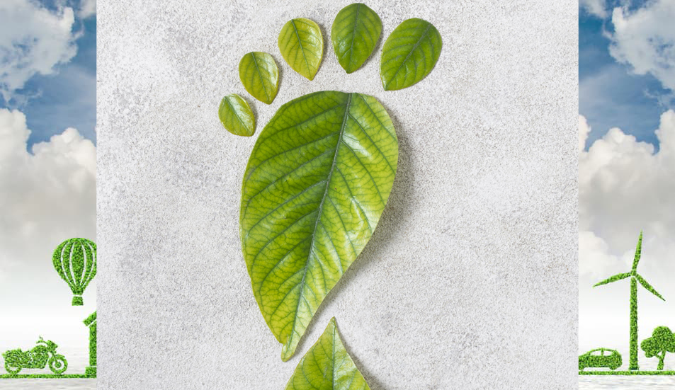

EFICIENCIA ENERGÉTICA Y AGUA
En BIO GLOBAL división Servicios Energéticos y de Fluidos prestamos servicios relacionados con el desarrollo, la gestión, la promoción y sustentabilidad del Ahorro y la Eficiencia Energética y de fluidos, mejorando el Medio Ambiente y la rentabilidad de nuestros clientes, mediante el uso eficiente de sus recursos naturales y energéticos. Somos una empresa comprometida con el Medio Ambiente, comprometidos con la reducción de los gases de efecto invernadero y que creemos firmemente que la medida más efectiva para conseguirlo consiste en reducir el consumo energético y de fluidos en todos los ámbitos, sin por ello perder calidad, productividad y confort en la actividad que se desarrolle.
Cuando hablamos de realizar un análisis de Eficiencia Energética y de Fluidos, hablamos de realizar auditorías y diagnósticos, a través de los cuales logramos cuantificar y entender la maneraen en la cuál se consumen y comportan los recursos energéticos de nuestros clientes, con el fin de detectar oportunidades de ahorro de costos y mejoras en materia de medioambiente.
Realizamos esta actividad de manera conjunta con nuestros clientes, debiendo los mismos colocar a disposición personal idóneo de las instalaciones y procesos, a modo de facilitar el conocimiento de las actividades desarrolladas en el establecimiento.
La fuente de información primaria, surge de un análisis histórico de los consumos, y de una serie de entrevistas con el personal designado por nuestros clientes, conjuntamente con la planificación de una serie de actividades intensivas de mediciones y estudios a realizar.
Estas actividades serán llevadas a cabo por personal idóneo de nuestra firma y con basta experiencia en la materia. Cabe destacar que durante el trabajo de campo, se requiere del acompañamiento de personal técnico de la empresa.
Como salida del proceso, surgirán propuestas de mejoras (de aquí en adelante denominadas PDME), que serán presentadas en un informe que contiene una evaluación de los beneficios Ambientales, de Costo, Técnicos y Económicos detallado para cada una de ellas, permitiendo así la realización de una planificación estratégica y priorización de las acciones planteadas.
Trabajamos bajo el lema – Lo que no se mide no se controla y solo las acciones implementadas lograran ahorros, dado así que no solo asesoramos a nuestros clientes, si no que acompañamos y participamos de todas las etapas de implementación, en caso de que así se lo requiera, Logrando así maximizar la capitalización de los ahorros una vez ejecutadas las acciones propuestas.
ANÁLISIS Y PROCESAMIENTO DE LA INFORMACIÓN RECABADADurante esta etapa del proceso, se realiza una contabilidad energética en base a datos históricos, la cual es presentada en forma de tablas y gráficos para su mejor comprensión. Luego se confecciona un Balance de Energía, tanto por uso como por fuente, a fin de realizar un mejor diagnóstico y dar sustento a las propuestas que resulten del estudio. Para una normalización de las mediciones y evaluación de potencial de mejora, se confeccionan ratios de consumo y puntos de control para las instalaciones, y de existir información interna o pública, se contrastan estos ratios a efectos de realizar un proceso de benchmarking. Se realizan un estudio de correlación entre consumos y variables, tanto de producción como de contexto y atmosféricas, con la finalidad de establecer y calendarizar el patrón de consumo y establecer lo que denominamos una línea de base o línea de referencia de consumo. Esta línea de base nos permitirá identificar el GAP existente sobre una base anualizada y medir la mejora resultante de la implementación de las acciones. Se siguen las directrices del Protocolo Internacional de Medición y Verificación de los ahorros. El objetivo de esta línea base, es crear un método sistemático que permita evaluar científicamente el desempeño energético futuro de las instalaciones. De este modo, se podrán evaluar los ahorros de energía independientemente de los cambios normales que se producen como ser cambios en el nivel de ocupación del sitio (aumento o disminución del personal), variaciones de la producción, etc.
Energías Alternativas
Mediante alianzas estratégicas con empresas de primera línea mundial en materia de equipos y sistemas de generación de energías alternativas ponemos al servicio de nuestros clientes la posibilidad de desarrollar proyectos integrales de este tipo.
- Energia Renovable
- Aprovechamiento de biogás de sistemas anaeróbicos
- Sistemas de cogeneración.
- Sistemas de Absorción
- Generadores Electricos de uso Escenciales y de aporte Normal
 

Analisis por Termografía
Es una herramienta que permite obtener la distribución superficial de temperatura de sistemas o equipos, permitiendo determinar fallos en el funcionamiento de los mismos o realizar un mantenimiento preventivo mediante la toma de muestras. Por medio de la termografía infrarroja se visualizan puntos fríos o calientes detectando de ese modo, perdidas en el rendimiento energético de los sistemas o equipos eléctricos, de vapor y condensado.
- Detectar pérdidas térmicas.
- Estado del sistema de retorno de condensado.
- Potenciar el mantenimiento preventivo.
- Analizar la magnitud y la localización del daño presente en la instalación estudiada.
- Potenciales de ahorro y optimización debido.

Huella de Carbono y Sustentabilidad
La huella de carbono es una medida que calcula la cantidad total de gases de efecto invernadero emitidos directa o indirectamente por una persona, empresa, producto o actividad a lo largo de su ciclo de vida. Estos gases, como el dióxido de carbono, el metano y el óxido nitroso, contribuyen al calentamiento global y al cambio climático.
¿Para qué sirve la huella de carbono?
- Medir el impacto ambiental: Permite cuantificar cuánto contribuye una actividad o producto al cambio climático.
- Identificar fuentes de emisiones: Ayuda a detectar qué procesos o hábitos generam ás emisiones.
- Definir Estratégias de reducción: Facilita el diseño de planes para disminuir el impacto ambiental, como el uso de energías renovables o la eficiencia energética

Informe Final
Como etapa final del proceso, se elabora un informe donde se consolidan los hallazgos y analiza su potencial. Este análisis es acompañado de una estimación de los ahorros previstos, y un detalle de acciones que se dividirán en dos grandes grupos. Grupo I – Acciones de rápida implementación (Denominadas Quick wins) Grupo II – Propuesta de inversiones necesarias y en caso que el cliente lo requiera, se confecciona un proyecto de inversión que incluya los índices de la misma (TIR, VAN, Período de Repago).